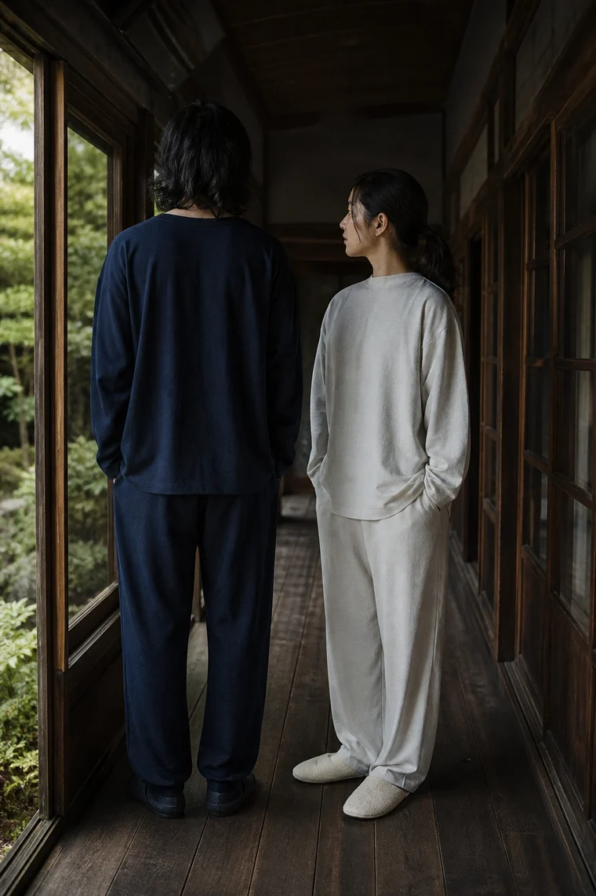
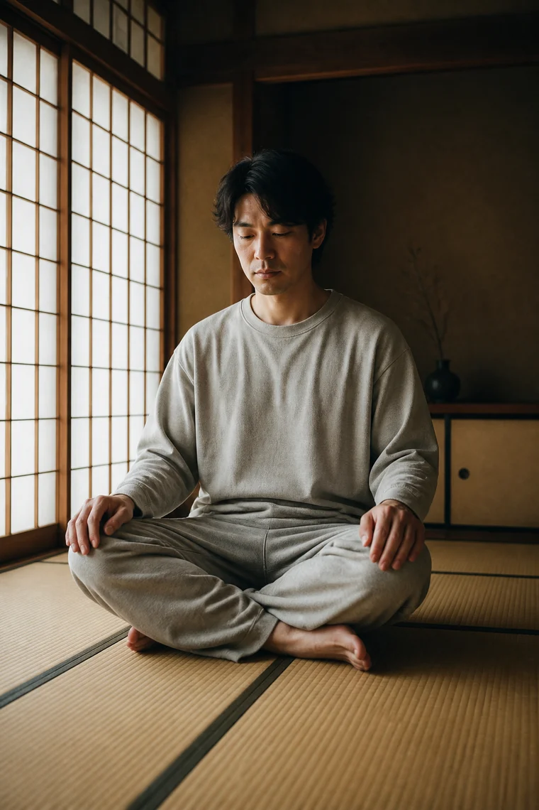
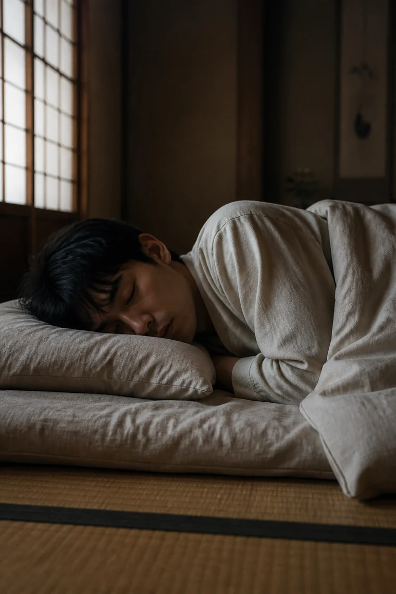

- Top
- 2026 秋冬 ルック
2026 秋冬 ルック
金沢の古い家で、
朝から夜までを撮りました。
障子の光、畳の手ざわり、縁側の空気。
一日のどの時間にもなじむ色と形を選びました。
-

Look 01
セットアップ 生成 M
-

Look 02
セットアップ 生成 L／紺 M
-

Look 03
ロングスリーブトップス 墨 M
イージーパンツ 墨 M -

Look 04
ロングスリーブトップス 生成 L
-

Look 05
ロングスリーブトップス 紺 M
イージーパンツ 生成 M -

Look 06
セットアップ 墨 S